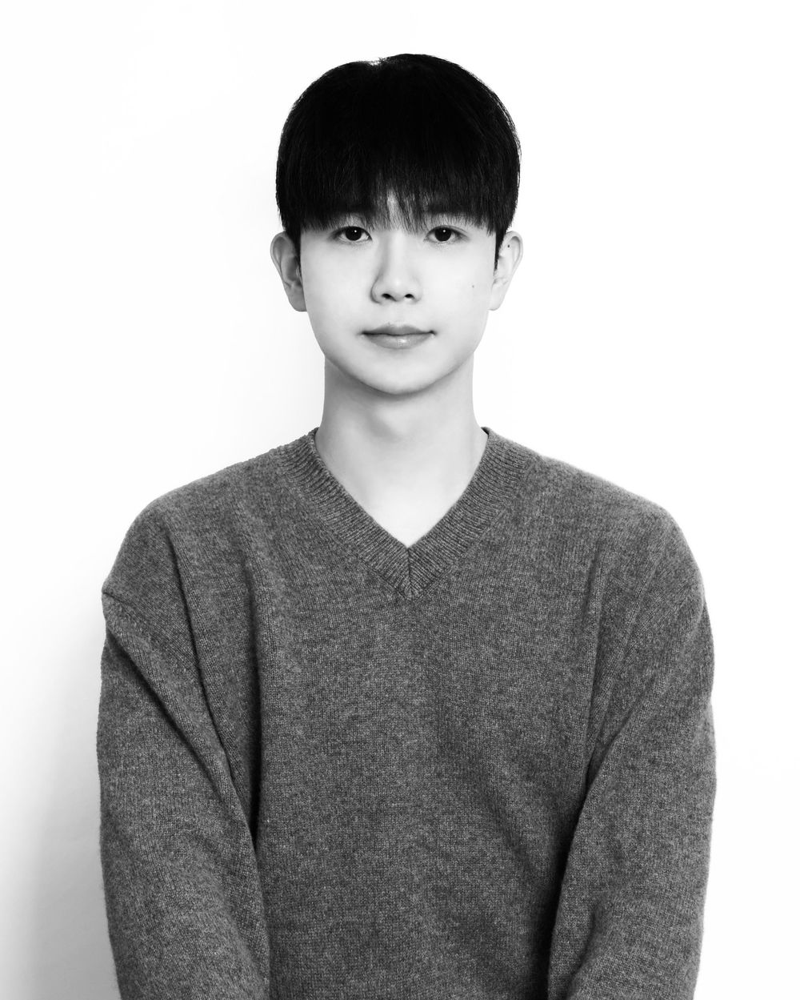

만드는 사람

신지훈피아노 연주자 · 새김 기획
울산에서 클래식 피아노를 연주하며 여러 차례 무대를 준비했습니다. 직접 연주회를 열면서 프로그램을 짜고, 포스터와 티켓을 만들고, SNS로 공연을 알리고 관객을 모으는 일까지 모두 혼자 해결했습니다. 지역 피아노 연주 단체의 공연 기획과 홍보에도 참여했습니다.
그 과정에서 알게 된 것은, 무대에 서고 싶은 연주자는 많지만 그들이 부담 없이 무대에 설 수 있도록 이어 주는 곳은 드물다는 사실이었습니다. 전공자뿐 아니라 수준 높은 아마추어, 학생, 음악을 다시 시작한 어른까지, 연주하고 싶은 사람은 생각보다 많았습니다.
새김은 그 경험에서 시작했습니다. 공간만 빌려주는 곳이 아니라, 연주자가 공연을 하나의 작품으로 완성하고 오래 남길 수 있도록 돕는 곳. 큰 공연장이 아니어도 좋은 연주자가 자신의 무대를 만들고, 시민은 가까운 거리에서 클래식을 만나는 울산을 꿈꿉니다.
흑과 백, 무채색에
나의 색채를 입히는 일.연주자로서, 그리고 공연을 만드는 사람으로서의 태도
왜 새김인가
수천 년 전, 울산 사람들은 바위에 그날을 새겼습니다.
울산 반구천에는 고래와 사람, 사냥하는 장면을 바위에 새긴 그림이 남아 있습니다. 2025년 유네스코 세계유산이 된 이 기록처럼, 새김은 오늘 울산에서 울린 연주를 오래 남기려 합니다.
가진 것
공연을 만들어 본 사람
직접 해 본 공연 제작
프로그램 구성, 공연장 선정, 포스터와 티켓, 홍보와 관객 모집까지 공연의 전 과정을 직접 경험했습니다.
콘텐츠와 SNS
클래식 피아노를 주제로 SNS를 운영하며 연주 영상과 공연 홍보, 곡 소개 콘텐츠를 만들어 왔습니다.
숫자로 보는 운영
회계학을 전공하며 회계·세무와 ERP 자격을 갖췄습니다. 좋은 공연이 지속될 수 있는 구조를 숫자로 설계합니다.
연주
- 2026.02제1회 클래시카 서울 신인음악회클래시카 서울
- 2026.08신지훈 & 황수정 사제 피아노 조인트 리사이틀 〈MIRROR〉 기획·연주벨노드아트홀
- 2026.11.07예정제3회 피아노마드 연주회부산 뮤지카오스
- 2026.11.28예정ON Harmony 프로와 아마추어 동행 콘서트부산대학교 음악관 콘서트홀
수상
- 제1회 클래시카 서울 오디션 3위
- 제3회 유진온뮤직 아마추어 콩쿠르 2위
- NEWS CLASSIC M 2026 국제음악콩쿠르 일반부 1위
- 제4회 숭실대학교 아마추어 피아노 콩쿠르 청년부 3위
- 제3회 한국교수법음악협회 전국음악콩쿠르 대회장상
- 제2회 NUNC 아마추어 피아노 콩쿠르 청년부 2위